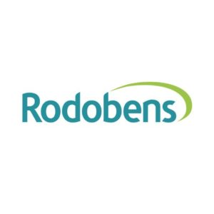

0
Anos no mercado
Topografia e projetos
Empresa no mercado desde 1998, com equipe qualificada e equipamentos de última geração — Estação Total Leica TS 06 R400 e GPS GeoMax RTK Zenith 25 PRO.
Leica TS 06 R400 · GeoMax RTK Zenith 25 PRO
A nossa empresa esta no mercado desde 1998 atuando na área de engenharia da agrimensura. Executando serviços de levantamento topográfico, demarcação, locação de obra, nivelamento, cálculo de volumetria e Georreferenciamento. A empresa foi fundada no ano de 1998 , em São José do Rio Preto e sua principal missão é oferecer serviços topográficos com precisão para que sua construção sai conforme o planejado sem nada para atrapalhar.
A FJS topografia é uma empresa conceituada pelos seus diversos serviços prestados com total qualidade e eficiência, procurada para fundação de obras e projetos conhecidos, tais como: a topografia do inicio Plaza avenida shopping, os prédios do shopping Iguatemi, fez parte da modificação da UNIMED dentre outros projetos já realizados. O reconhecimento de seus clientes e parceria dos seus serviços prestado estão alguns nomes conhecido pela cidade de São José do Rio Preto.
Anos no mercado
Clientes atendidos
Linhas de serviço
O levantamento topográfico planialtimétrico é a primeira etapa do processo para elaboração de projetos na construção civil.
Determinação de diferenças de altitude e referência para obras e infraestrutura.
Marcos, confrontações e suporte à delimitação de limites com rigor técnico.
Transferência do projeto ao campo — fundações, eixos, cotas e alinhamentos.
Quantificação de volumes de corte, aterro e estoque com base em levantamento.
Amarração de imóveis rurais e coordenadas aos sistemas oficiais, com GPS de precisão.
Mapeamento aéreo e levantamentos em áreas amplas ou de difícil acesso terrestre.
Projeto exclusivoServiço dedicado ao projeto Obra Damha Fit, com execução técnica precisa e alinhada ao cronograma da obra.
Projeto exclusivoServiço dedicado ao empreendimento Predio Lupema Construtora, com acompanhamento técnico e controle de execução em campo.
Empresas e profissionais que confiam na FJS Topografia para seus projetos. Parcerias construídas com precisão e comprometimento.

Solicite uma visita, tire dúvidas e obtenha mais informações. Fale conosco e descubra tudo o que a FJS Topografia pode oferecer ao seu projeto.